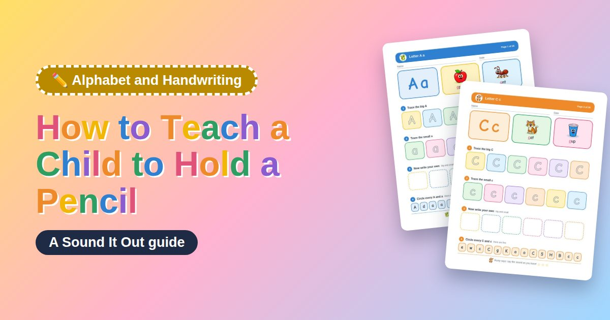

Most children are ready to learn a controlled pencil grip around age 3 to 5. Show them the tripod grip, holding the pencil between the thumb and first finger, resting on the middle finger. Practice with short, thick crayons or pencils first, and build hand strength through play instead of correcting grip for long periods.
1What a Good Pencil Grip Looks Like
The tripod grip is the grip most teachers aim for. The thumb and index finger hold the pencil near the sharpened tip, while the pencil rests on the side of the middle finger. The other two fingers curl gently into the palm.
This grip is not the only grip that works, but it gives good control for writing letters and numbers over time.
2When to Start Teaching Pencil Grip
Children usually start holding crayons and pencils around age 2 or 3, often with a fist grip. Between ages 3 and 5, hand muscles grow strong enough for a more controlled grip. Kindergarten is a common time to focus on the tripod grip for writing practice.

3How to Build the Right Grip
Use short, broken crayons or small pencils, since a shorter tool naturally encourages fingers to hold it near the tip. Practice with tongs, clothespins, and tweezers to strengthen the same finger muscles used for a pencil grip.
Show your child the grip yourself, and guide their fingers into place gently, instead of only giving verbal instructions.
4What to Do If the Grip Is Not Perfect
Many children use a slightly different grip and still write clearly and comfortably. Focus on comfort and control rather than forcing one exact finger position. If your child's hand tires quickly or the grip makes writing hard to read, extra practice with grip exercises can help.
📖Practice this in the free reading appReading games your child can play on a phone, tablet or computer. Every word can be sounded out. No sign-up.Open the app5Fun Ways to Practice Hand Strength
Playing with clay, squeezing sponges in water, picking up small objects with tweezers, and using spray bottles all build the hand muscles needed for a steady pencil grip. These activities feel like play, not practice, which helps young children stay engaged.
Quick tips
- ⭐Offer short, broken crayon pieces instead of long, new crayons.
- 🎈Practice grip strength with clothespins, tongs, or tweezers during playtime.
- 🌈Guide your child's fingers into place rather than only describing the grip.
- ✏️Keep handwriting practice sessions short, around five to ten minutes.
- 🎯Watch for comfort and control, not just one exact finger position.